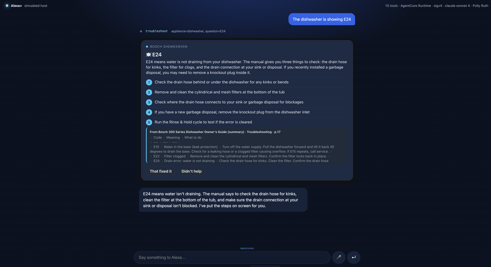
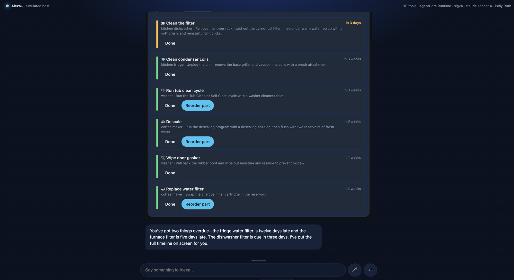

Alexa+ add-on · open-source MCP server · runs on AWS
Your home's memory,
on Alexa+.
HomeKeeper remembers every appliance in your house, reads their manuals so you don't have to, builds the maintenance schedule itself, and reorders the parts you forget about. Ask in plain words; get a grounded answer and a card you can act on.

troubleshoot on Bedrock AgentCore
Runtime; Claude grounds the answer in the manual and the MCP App card renders inline.
Why
Every household owns 20 to 40 appliances, each with a manual nobody keeps, a warranty nobody tracks, and a filter nobody remembers to replace. The information exists; it is just scattered across PDFs, receipts and the back of a cabinet. A voice assistant in the kitchen is the natural home for it, but only if it can actually remember across sessions and read the source material instead of guessing.
Remembers
Appliances, purchase dates, warranties and maintenance history persist per household, across every conversation.
Reads
Manuals are chunked, embedded with Amazon Bedrock and retrieved per question, so answers are grounded in the actual document, with the excerpt shown.
Plans
Registering an appliance derives its maintenance schedule: filters, descaling, inspections. HomeKeeper surfaces what is due and what is overdue.
Acts
Consumables are linked to products, so "order the fridge filter" is one turn, confirmed through MCP elicitation.
How it works
Alexa+ talks to add-ons over the Model Context Protocol. HomeKeeper is a self-hosted MCP server (spec 2025-11-25, Streamable HTTP) with MCP Apps cards, deployed to Amazon Bedrock AgentCore Runtime.
Alexa+ (MCP client) ──Streamable HTTP──▶ HomeKeeper MCP server ──▶ Bedrock Claude Sonnet 4.5: reasoning
▲ on AgentCore Runtime Titan Embeddings V2: retrieval
│ │ DynamoDB household state
└──── renders MCP App cards ◀────────────┘ S3 manual chunks + embeddings
Grounded troubleshooting
Manuals are split by section and embedded. Retrieval is a hybrid of cosine similarity and keyword scoring, so an exact code like E24 always hits. Claude writes the answer from the retrieved chunks only.
MCP Apps cards
Tools declare _meta.ui.resourceUri; any MCP Apps host renders the appliance carousel, troubleshooting card, maintenance timeline and order confirmation inline. Cards can call tools back ("That fixed it", "Reorder part").
Confirmation, not guessing
Orders go through MCP elicitation when the host supports it, with a two-step quote-then-confirm fallback. Ambiguous appliance references return candidates instead of a guess.

maintenance_due; the spoken summary is written by Claude and voiced by Amazon Polly.Ten tools, one add-on
register_appliance | Add an appliance (brand, model, room, purchase date). Auto-derives its maintenance schedule. |
list_appliances | Household inventory, rendered as a carousel card. |
ingest_manual | Attach a manual (URL or upload) and index it for retrieval. |
troubleshoot | Grounded Q&A against the appliance's manual, with the source excerpt. |
maintenance_due | What needs attention now and in the next 30 days. |
log_maintenance | Record a completed task; resets its schedule. |
reorder_consumable | Find and order the matching filter, part or consumable. |
warranty_status | Is it still covered, and what do I need to claim. |
maintenance_history | What has been done, when. |
remove_appliance | Forget an appliance. |
Plus a weekly_checkup prompt and four ui://homekeeper/*.html MCP App resources. Because it is plain MCP, the same server works unchanged in Claude, ChatGPT, VS Code and any other MCP host.
A simulated Alexa+ while the toolkit is in preview
The Alexa+ MCP Toolkit is Private Preview, so the repo ships a web host that behaves like Alexa+ against the same server: an MCP client (SigV4-signed for AgentCore), MCP Apps rendering in sandboxed iframes, and two ways to talk.
Type
Bedrock Converse with Claude Sonnet 4.5 runs the tool loop; replies are spoken by Amazon Polly (generative Ruth by default, switchable live).
Talk
Tap the mic for a live session with Amazon Nova 2 Sonic: speech in, reasoning, MCP tool calls and barge-in over one bidirectional stream, with each sentence voiced by Polly.
Built on AWS
Amazon Bedrock AgentCore Runtime
Hosts the MCP server in MCP protocol mode as a Node.js 22 direct-code deploy. No containers.
Amazon Bedrock
Claude Sonnet 4.5 for reasoning and grounded synthesis; Titan Text Embeddings V2 for retrieval; Nova 2 Sonic for live voice.
Amazon Polly
Generative voices for everything the user hears, with SSML so error codes are read letter by letter.
Amazon DynamoDB
Single-table household state: appliances, schedules, maintenance history, orders.
Amazon S3
Manual chunks with their embeddings.
AWS CDK
All of it as code, including the runtime, IAM and an optional Cognito issuer for OAuth-protected inbound auth.
Run it
Node.js 22+. AWS credentials are optional locally; without them the server and simulator run in a rule-based mode that still exercises every tool and card.
git clone https://github.com/ritwikareddykancharla/homekeeper-alexa
cd homekeeper-alexa
npm install
npm run dev # MCP server on :3000/mcp, simulator on :5173
# with Bedrock
AWS_PROFILE=your-profile AWS_REGION=us-east-1 npm run dev
# deploy to AWS (DynamoDB, S3, AgentCore Runtime)
npm run deployRead the README, the friction log and the product feedback.